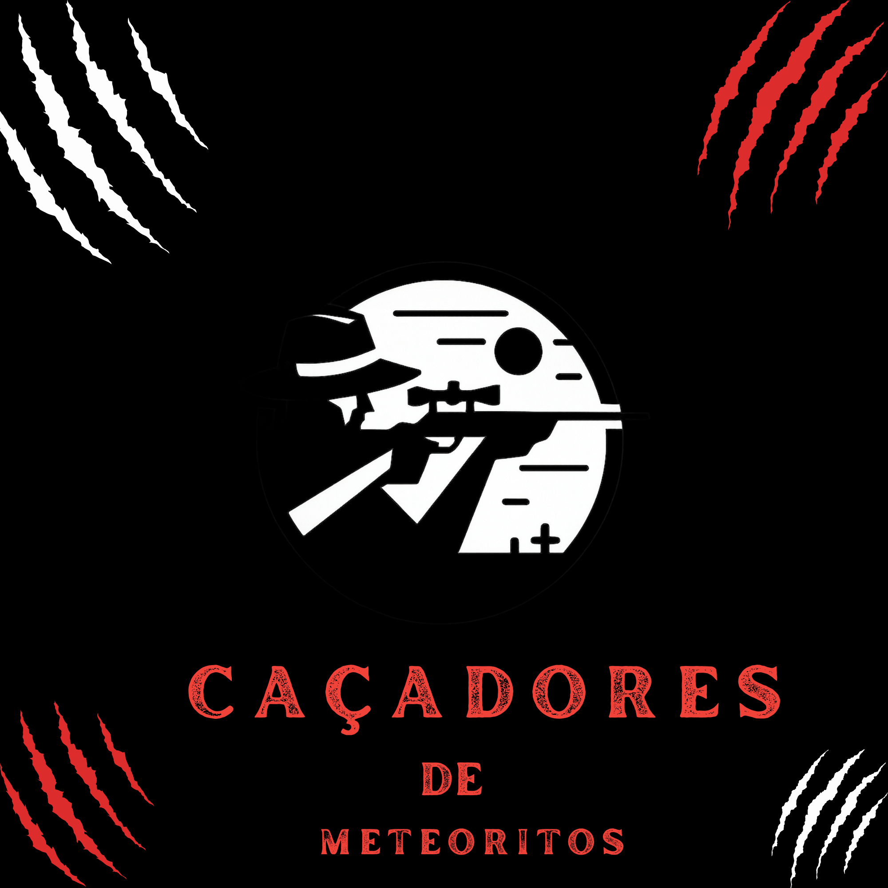

☄️ CAÇADORES DE METEORITOS ☄️
"Descobrindo tesouros do espaço para o mundo."
1. Identidade Virtual da Empresa
Nome da Empresa: Caçadores de Meteoritos
Slogan: "Descobrindo tesouros do espaço para o mundo."
Sobre a Empresa
A Caçadores de Meteoritos é uma empresa especializada na busca, identificação e comercialização de meteoritos encontrados em regiões remotas. Com a missão de transformar descobertas espaciais em conhecimento e oportunidades, a empresa conecta suas descobertas a museus, universidades, centros de pesquisa e colecionadores de todo o mundo.
Por meio do sistema AstroTracker, os caçadores podem registrar novas descobertas, anexar fotos e informações detalhadas sobre os meteoritos encontrados. Cada item passa por um rigoroso processo de análise realizado por geólogos especializados para garantir sua autenticidade e procedência.
Após a aprovação dos especialistas, os meteoritos podem ser disponibilizados em leilões virtuais e recebem certificados de autenticidade, assegurando transparência, segurança e confiabilidade em todas as etapas do processo.
2. Requisitos Funcionais
RF01: Permitir login com e-mail e senha.
RF02: Permitir cadastro de descobertas de meteoritos.
RF03: Permitir consulta das descobertas cadastradas.
RF04: Permitir emissão de laudos geológicos.
RF05: Garantir avaliação independente dos geólogos.
RF06: Registrar aprovações e reprovações.
RF07: Verificar aprovação de dois geólogos.
RF08: Reter item para análise física em caso de divergência.
RF09: Permitir leilão apenas para meteoritos aprovados.
RF10: Emitir certificado de autenticidade.
RF11: Armazenar histórico de avaliações.
3. Requisitos Não Funcionais
RNF01: Carregamento das páginas em até 3 segundos.
RNF02: Proteção dos dados de login.
RNF03: Disponibilidade durante o horário de funcionamento.
RNF04: Interface simples e intuitiva.
RNF05: Compatibilidade com Chrome, Firefox e Edge.
RNF06: Responsividade para celular, tablet e computador.
RNF07: Integridade dos dados cadastrados.
RNF08: Confiabilidade do histórico de avaliações.
RNF09: Facilidade de manutenção do sistema.
RNF10: Capacidade de crescimento sem perda de desempenho.
4. Diagrama de Casos de Uso

Figura 1 – Diagrama de Casos de Uso do Sistema Caçadores de Meteoritos.
Explicação do Fluxo
O processo começa quando o Caçador realiza o login e registra uma nova descoberta de meteorito, anexando fotos e informações relevantes sobre o material encontrado.
Após o cadastro, a descoberta é armazenada no sistema e encaminhada para avaliação dos geólogos responsáveis.
Os Geólogos analisam o meteorito de forma independente, emitindo seus laudos sem acesso à avaliação do outro especialista.
O sistema verifica automaticamente os pareceres emitidos. Caso os dois geólogos aprovem a autenticidade do meteorito, o item é liberado para o módulo de Leilão Virtual.
Se houver divergência entre os laudos, o meteorito é encaminhado para uma análise física mais detalhada antes de qualquer negociação.
Os Compradores podem participar do leilão dos meteoritos aprovados e realizar lances pelos itens disponíveis.
Após a conclusão do processo, o sistema gera um Certificado de Autenticidade, garantindo a procedência e a validade da rocha espacial.
O Administrador acompanha todo o processo, gerencia usuários, consulta laudos e monitora os certificados emitidos pelo sistema.
5. Diagrama de Classes

Figura 2 – Diagrama de Classes do Sistema AstroTracker.
Explicação do Diagrama
A classe Usuário representa a base do sistema, contendo informações comuns como nome, e-mail e senha.
As classes Caçador, Geólogo e Administrador herdam as características da classe Usuário e possuem responsabilidades específicas dentro do sistema.
O Caçador é responsável pelo cadastro dos meteoritos encontrados.
Cada Meteorito pode possuir um ou mais Laudos emitidos por geólogos independentes para validação da autenticidade.
Somente meteoritos aprovados por dois geólogos podem participar do Leilão Virtual.
Após a aprovação e comercialização, o sistema gera um Certificado de Autenticidade para garantir a procedência da rocha espacial.